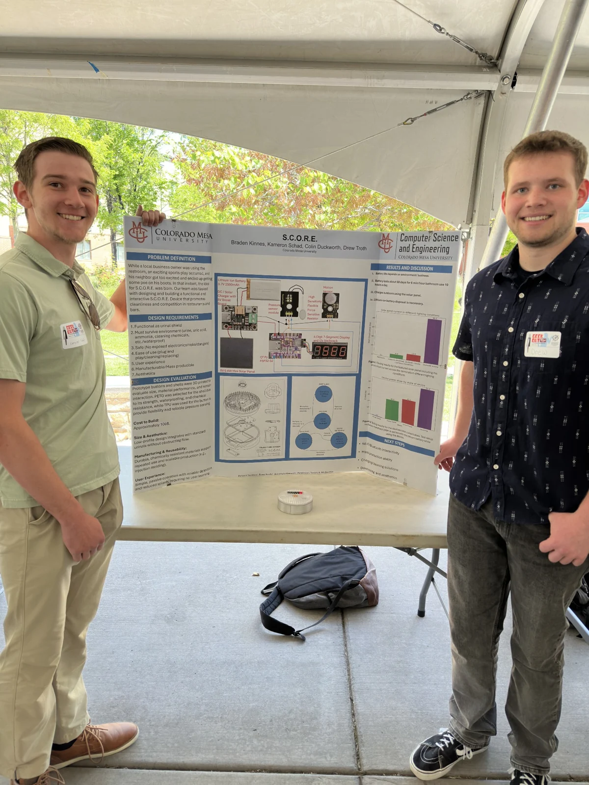

Engineering portfolio / 2024–2026
Projects.
Explore mechanical design, simulation, numerical methods, and fabrication. Every project includes the period, my individual contribution, and supporting engineering evidence.
 01
01Rocket Nose Cone Aerodynamics
Designed eight interchangeable nose cones and compared CFD with wind-tunnel results, documenting where the methods disagreed.
 02
02Two-Player Claw Machine
Proposed the manual gantry and led pneumatic claw development through repeated iterations for a working team prototype.
 03
03Helmet Light Mount
Designed a removable adapter, investigated a recurring snap-fit failure, and improved durability through print-orientation changes.

04Client-Sponsored Mechanical Design
Developed most of the mechanical CAD for a four-part client-sponsored prototype, accounting for measured interfaces and assembly constraints.
 05
05Scene Shop Fabrication
Designed and constructed shop infrastructure, including an 18-foot workstation, and coordinated fabrication of four mobile worktables.
 06
06Computational Methods
Applied numerical methods to dynamics, stress analysis, experimental data, and signal processing, with explicit result checks.
 07
07Timberline Trebuchet
Proposed a video-inspired design, adapted it to salvaged materials, assisted fabrication and recorded experimental data.
No projects in this category.
Technical details